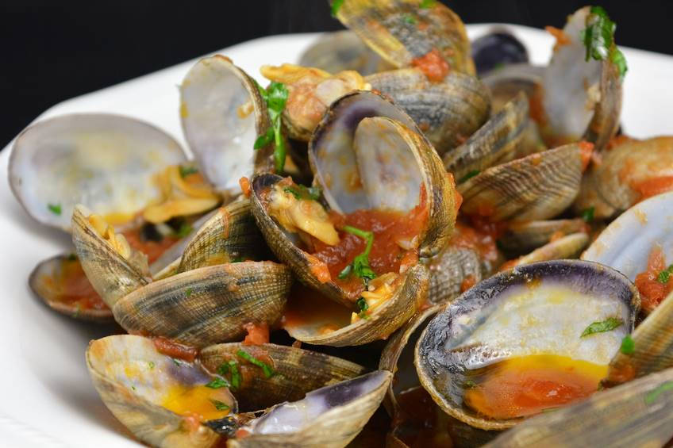
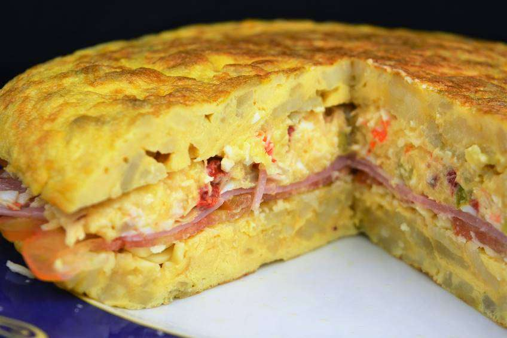

Receta 1
CANELONES DE JAMÓN YORK RELLENOS DE ENSALADILLA RUSA

En este precioso día tenemos una receta sencilla, una de las más sencillas que he hecho hasta la fecha diría yo. Con una ensaladilla rusa se pueden hacer muchas otras cosas a parte de comerla sola. Un buen ejemplo de ello son estos impresionantes canelones hechos con jamón york en vez de pasta y rellenos con la ensaladilla.
Receta 2
ALMEJAS PICANTONAS CON TOMATE

¡Me sentaría y no pararía de comer! De hecho es lo que hicimos todos en casa cuando las preparé, todas las que veis ahí duraron 10 minutos escasos así que imaginad lo ricas que están. Ojalá podáis prepararlas muy pronto en vuestras casas porque es un plato que no os podéis perder bajo ningún concepto.
Receta 3
TORTILLA DE PATATA RELLENA CON ENSALADILLA RUSA

Es posible que os suene raro una tortilla de patata rellena de ensaladilla rusa, pero en muchos bares la he visto servida como pincho y he querido incluirla en mi recetario. Estoy muy seguro de que esta receta os va a solucionar muchas comidas y cenas porque es muy fácil y teniendo hecha la ensaladilla rusa, solo tenéis que hacer una buena tortilla de patata y luego rellenarla.